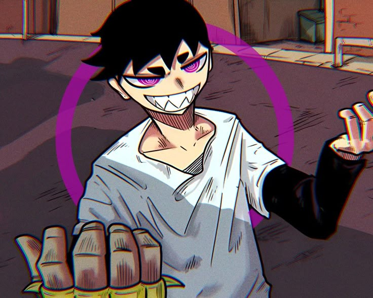
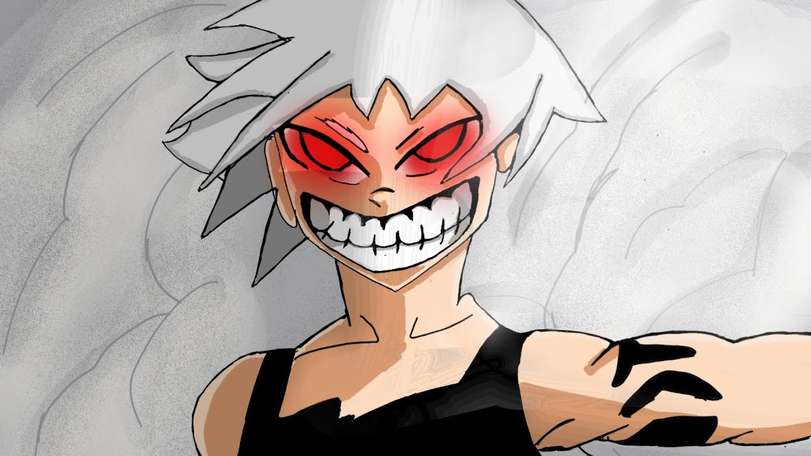
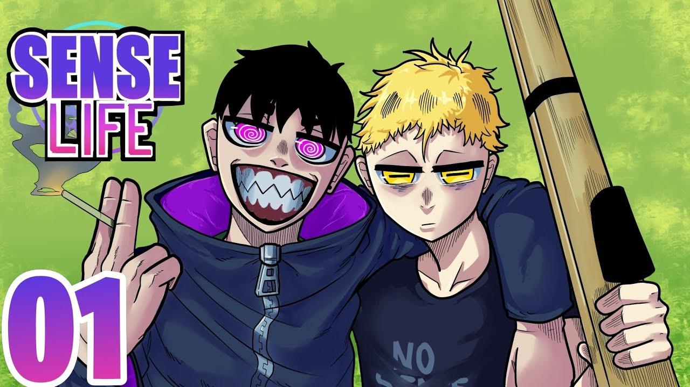

Ao começo da história, Kaleb parace ser apenas um jovem qualquer, sendo encontrado por um menino chamado Noah. Mas descobrimos que ele tem uma habilidade diferente. Ele ao usar de alguma droga, pode manipular a mente de seus inimigos e criar ilusões na cabeça deles. Mas descobrimos também que ele tem uma recompensa por sua cabeça, e então aparece um inimigo para o enfrentar.

Reaver está atrás de Kaleb, para poder ganhar a recompensa, mas ele não é uma pessoa normal, descobrimos que ele também possui uma habilidade, ele tem a capacidade de se teletransportar, tornando ele um assassino extremamente habilidoso.
Essas habilidades são conhecidas como Tributos, esses tributos são habilidades que são concedidas as pessoas quando possuem uma pessoa muito próxima que acaba morrendo, ao morrer seus maiores desejos são passados para a pessoa, sendo assim que Kaleb e Reaver receberam suas habilidades.
Kaleb enfrenta Reaver em uma batalha. Durante o combate, ele utiliza de uma droga para ativar o seu tributo, assim conseguindo manipular a velocidade de seu inimigo. Assim conseguindo atacar com mais eficiência e vencendo a luta. Mas ele não consegue o vencer sozinho, então seu novo amigo Noah, onde descobrimos que ele possui uma arma como tributo também, os dois juntos conseguem vencer Reaver. Ao fim da batalha, Kaleb decide ajudar Noah ao encontrar um sentido para a sua vida, e os dois partem para novas aventuras.

| Nome | Tributo |
|---|---|
| Reaver | Teleportar Coisas Que Olho Para Minha Mão |
| Kaleb | Manipulação Mental Ao Utilizar Alguma Droga |